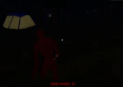
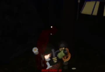

The Mimic also known in game as Vita Mimic, initially teased on April 27th, 2024, and officially added on August 2nd, 2024, is the thirteenth monster in Pillar Chase 2. It is a species of fleshy humanoid creatures that stalks and eats humans. It originates from the analog horror series Vita Carnis, created by Darian Quilloy. It can be unlocked for 1500 coins in the shop. (Previously 1931 before the Black Friday Event's conclusion).
|  When pressing 1 Vita Mimic will pose menacingly and screech, becoming darker and slightly transparent for 22 seconds. While in this state, all of its idle sounds are muted except for its footsteps, which are only very muffled, and its movement speed is dramatically increased. If Vita Mimic attacks or the Elder Ascension meter depletes, it will leave the state and the effects will end. This ability has a cooldown of 31 seconds. |
 When pressing 2 Vita Mimic stalls while making a low humming noise, outlining players in its line of sight or within 58 studs. Hitting a player who is outlined applies a bleeding effect to them. This ability has a cooldown of 16 seconds. |